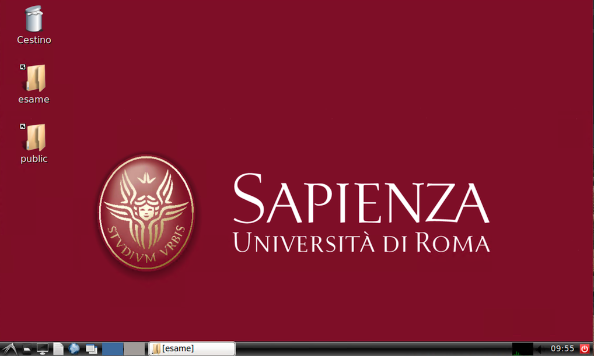
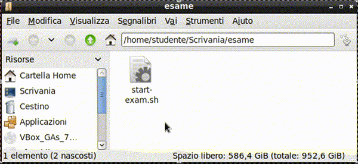
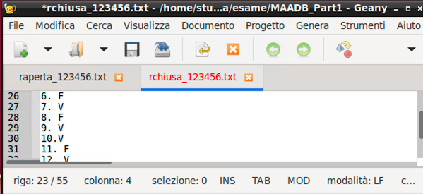
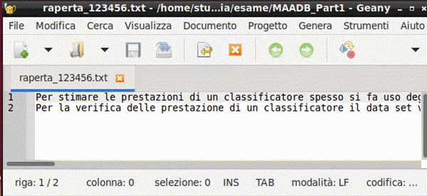
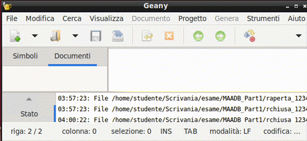
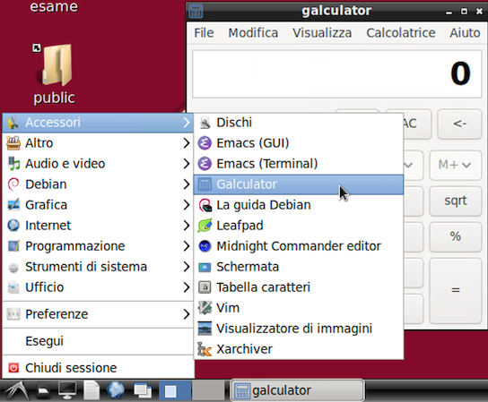

Software e sistema operativo
Attenzione
Questa sezione è ancora in fase di revisione. Le informazioni qui contenute potrebbero non essere complete o aggiornate.
Questa sezione contiene le istruzioni date negli anni accademici precedenti agli studenti che sostengono l'esame di MAADB, quando non era ancora disponibile l'applicazione Exam helper. Le informazioni qui contenute sono quindi da considerarsi obsolete, ma possono essere utili in caso di malfunzionamenti dell'applicazione Exam helper o per la risoluzione di problemi tecnici durante l'esame.
Risorse per lo svolgimento dell'esame
La cartella condivisa 'esami'
I file necessari per lo svolgimento della prova si troveranno nella cartella esame, di
cui è presente un link sul desktop.

All'inizio dell'esame, la cartella conterrà:
- una copia di questo documento in formato pdf (
istruzioni.pdf). - Il formulario (
MAADB cheat sheet <versione>.pdf) - le tavole statistiche (
tavole_z_t_chi2_F.pdf)
Inoltre, la cartella contiene uno script per avviare l'applicazione Exam helper
(start-examhelper.sh). Nota bene: di norma l'applicazione Exam helper è già avviata. Lo
script serve per riavviarla in caso di chiusura accidentale.
Le tracce verranno distribuite mediante il server dell'aula e appariranno
nella cartella pochi secondi dopo la distribuzione (che verrà chiaramente annunciata dal
docente). Trattandosi di una condivisione di rete, il file manager potrebbe richiedere
un aggiornamento manuale della visualizzazione del contenuto della cartella, utilizzando
il menu Visualizza > Ricarica cartella
Tip
Per aggiornare il la visualizzazione del contenuto della cartella è possibile
anche premere il tasto F5.
Tip
Per visualizzare più facilmente i nomi dei file, è possibile passare alla
visualizzazion a lista utilizzando il menu Visualizza > Modalità vista cartella >
Vista lista dettagliata oppure premendo la combinazione di tasti CTRL+4.

Successivamente, mediante il sistema di distribuzione d'aula, nella cartella verranno aggiunte in successione due sottocartelle:
MAADB_Part1: con i file necessari per la Parte 1 dell'esame (file.me.mat)MAADB_Part2: con i file necessari per la Parte 2 dell'esame (filepdfe.txt)
In appendice è riportata la struttura completa della cartella esame.
Anche il ritiro avverrà tramite il server d'aula, e comprenderà tutti e soli i documenti contenuti nella cartella 'esame'. Si raccomanda di non spostare altrove i propri elaborati, per evitare che risultino non consegnati (e quindi non valutabili).
Quando il docente annuncia che sta per procedere al ritiro degli svolgimenti, accertarsi di aver salvato i file e chiuso i documenti contenenti lo svolgimento (e se non più in uso di aver chiuso l'editor -- Matlab o Geany).
Le applicazioni da utilizzare
Matlab
Matlab R2023b è installato sul PC e viene utilizzato per la Parte 1 dell'esame.
Di norma viene avviato utilizzando il pulsante "Avvia Problemi in Matlab" nell'applicazione Exam helper. L'applicazione Exam helper procederà a:
- avviare Matlab
- impostare
MAADB_Part1come cartella di lavoro del Matlab - aggiungere al path di Matlab il toolbox di verifica formale, che include il live script
check_exam.mlx - copiare nella cartella di lavoro gli script contenuti nella sottocartella
templates, modificandone il nome per includere il numero di matricola dello studente - aprire nell'editor gli script descritti al punto precedente
- avviare il live script
check_exam.mlx, che consente di verificare lo stato di avanzamento dello svolgimento e di eseguire le verifiche formali sulle variabili.
E' sempre possibile avviare Matlab senza fare uso dello script, ma in questo caso è
necessario eseguire manualmente le stesse operazioni di configurazione, che sono
descritte nella sezione
Malfunzionamento della procedura automatica di avvio dei problemi in Matlab
in Appendice.
Geany (editor di testo)
Geany è l'editor di testo utilizzato per la Parte 2 dell'esame.

L'applicazione:
- mostra chiaramente quali file non sono ancora stati salvati (tab di colore rosso)
- mostra nella barra di stato il numero di caratteri del testo selezionato

Tip
Per lo svolgimento della prova, è opportuno modificare la visualizzazione in modo che il testo venga visualizzato su più righe, senza che le righe superino il margine destro dello schermo. A questo fine, è necessario attivare il word wrap (menu View -> Word Wrap).

Tip
Se all'avvio oltre ai documenti di testo vengono visualizzati ulteriori pannelli, è possibile nasconderli trascinandone il bordo verso il margine.

Di norma viene avviato utilizzando il pulsante "Avvia Quesiti a Risposta Chiusa" o "Avvia Quesiti a Risposta Aperta" nell'applicazione Exam helper. L'applicazione Exam helper procederà a:
- copiare nella cartella di lavoro i documenti di testo contenuti nella sottocartella
templates, modificandone il nome per includere il numero di matricola dello studente - aprire nell'editor gli script descritti al punto precedente
xPDF (visualizzatore di file pdf) -- OBSOLETO
Sezione in revisione
I file pdf saranno aperti nel browser web.
galculator (calcolatrice)
galculator è la calcolatrice predefinita sui PC d'esame. Si trova nel menu delle applicazioni del sistema operativo, sottomenu "Accessori".
